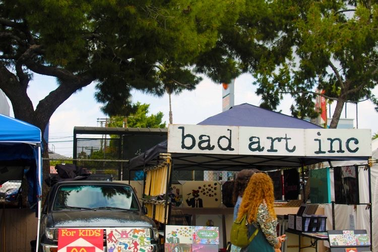
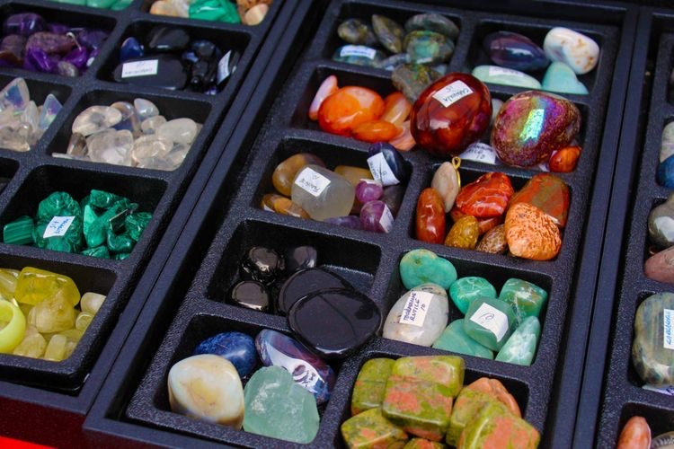
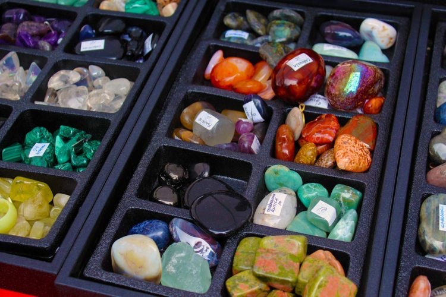

Amie De La Rosa
My name is Amie De La Rosa and I am a first year student at University of California, Riverside. I am majoring in Education. I hope to either teach elementary school, high school History, or high school Math. I currently do not have much experience seeing as I am a first year and have been very busy with school work. However, next year I will be working on my forty hours of community engaged learning which will help me earn lots of experience teaching and helping students. I may also get a job working with middle school students tutoring them online in either English or Math. I used to help out with a pre kindergarten class and would help out. I would read to students, help them with their homework, play games with them, help the teacher with art projects, etc. I have also helped at a middle school halloween carnival running a game. I have worked with another middle school doing various tasks to help with a father daughter dance. I helped blow up balloons, decorate, set up food, and serve food. I have also helped two middle school teachers with organizing their classrooms and grading student assignments. I have also helped a middle school front office with organizing, answering phones, and running summons slips. I love grading papers and I am very good at it. I am very good at math and enjoy doing it, and so I am very well suited in helping students with math work. History has always interested me and I occasionally learn about it on my own, my passion for it is what makes me want to be a history teacher. I have pretty good technology skills which is great because if I ever need to teach online. When the pandemic first started and distance learning started, many teachers had difficulty navigating it. Because I went through distance learning and am good with technology, if something like that ever occurs again while I am a teacher, I will be very prepared. I have a lot of patience and enjoy working with kids which I believe are qualities all teachers should have. Though I did not end up attending due to financial reasons, I was accepted into Adelphi University’s five year teaching program: Scholar Teacher Education Program (STEP). The fact that I was accepted into this program shows that I have what it takes to become a successful teacher. I have very good communication skills which are definitely important for teachers as teachers almost always have to collaborate with other teachers in their departments. I also have a very warm, happy, and welcoming personality which will allow my students to feel comfortable with me and allow for more communication with them and relate to them on a more personal level which can be important to personalize student learning.
My name is Amie De La Rosa and I am a first year student at University of California, Riverside. I am majoring in Education. I hope to either teach elementary school, high school History, or high school Math. I currently do not have much experience seeing as I am a first year and have been very busy with school work. However, next year I will be working on my forty hours of community engaged learning which will help me earn lots of experience teaching and helping students. I may also get a job working with middle school students tutoring them online in either English or Math. I used to help out with a pre kindergarten class and would help out. I would read to students, help them with their homework, play games with them, help the teacher with art projects, etc. I have also helped at a middle school halloween carnival running a game. I have worked with another middle school doing various tasks to help with a father daughter dance. I helped blow up balloons, decorate, set up food, and serve food. I have also helped two middle school teachers with organizing their classrooms and grading student assignments. I have also helped a middle school front office with organizing, answering phones, and running summons slips. I love grading papers and I am very good at it. I am very good at math and enjoy doing it, and so I am very well suited in helping students with math work. History has always interested me and I occasionally learn about it on my own, my passion for it is what makes me want to be a history teacher. I have pretty good technology skills which is great because if I ever need to teach online. When the pandemic first started and distance learning started, many teachers had difficulty navigating it. Because I went through distance learning and am good with technology, if something like that ever occurs again while I am a teacher, I will be very prepared. I have a lot of patience and enjoy working with kids which I believe are qualities all teachers should have. Though I did not end up attending due to financial reasons, I was accepted into Adelphi University’s five year teaching program: Scholar Teacher Education Program (STEP). The fact that I was accepted into this program shows that I have what it takes to become a successful teacher. I have very good communication skills which are definitely important for teachers as teachers almost always have to collaborate with other teachers in their departments. I also have a very warm, happy, and welcoming personality which will allow my students to feel comfortable with me and allow for more communication with them and relate to them on a more personal level which can be important to personalize student learning.
My name is Amie De La Rosa and I am a first year student at University of California, Riverside. I am majoring in Education. I hope to either teach elementary school, high school History, or high school Math. I currently do not have much experience seeing as I am a first year and have been very busy with school work. However, next year I will be working on my forty hours of community engaged learning which will help me earn lots of experience teaching and helping students. I may also get a job working with middle school students tutoring them online in either English or Math. I used to help out with a pre kindergarten class and would help out. I would read to students, help them with their homework, play games with them, help the teacher with art projects, etc. I have also helped at a middle school halloween carnival running a game. I have worked with another middle school doing various tasks to help with a father daughter dance. I helped blow up balloons, decorate, set up food, and serve food. I have also helped two middle school teachers with organizing their classrooms and grading student assignments. I have also helped a middle school front office with organizing, answering phones, and running summons slips. I love grading papers and I am very good at it. I am very good at math and enjoy doing it, and so I am very well suited in helping students with math work. History has always interested me and I occasionally learn about it on my own, my passion for it is what makes me want to be a history teacher. I have pretty good technology skills which is great because if I ever need to teach online. When the pandemic first started and distance learning started, many teachers had difficulty navigating it. Because I went through distance learning and am good with technology, if something like that ever occurs again while I am a teacher, I will be very prepared. I have a lot of patience and enjoy working with kids which I believe are qualities all teachers should have. Though I did not end up attending due to financial reasons, I was accepted into Adelphi University’s five year teaching program: Scholar Teacher Education Program (STEP). The fact that I was accepted into this program shows that I have what it takes to become a successful teacher. I have very good communication skills which are definitely important for teachers as teachers almost always have to collaborate with other teachers in their departments. I also have a very warm, happy, and welcoming personality which will allow my students to feel comfortable with me and allow for more communication with them and relate to them on a more personal level which can be important to personalize student learning.
Experience
Assisant to Teacher
• Organized classroom
• Graded assignments
• Helped students with homework
Ran STEM Booth
• Taught students about science
• Set up booth
• Assisted students with project
• Helped clean up MPR after event
Education
UC Riverside
University of California Riverside
University of California Riverside
Portfolio



